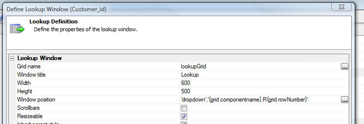
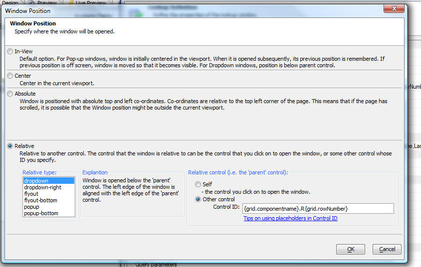

Lookups and Detail View - Window Position
When you define a Lookup window for a field, or a Detail View that appears in a pop-up window, you can now specify the position where the window should appear. Previously you had no control over this and the window was always opened in the center of the screen, or - for Lookup windows - as a dropdown (immediately below the button that you clicked to open the window). Now, the Lookup Definition screen and the Detail View Window Properties have a new option that lets you set the window position:
Lookup Definition screen now allows you to define the window position.
The window position screen has multiple options for positioning the window:
